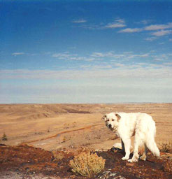

Amoreena Joy Afi France

Photoshop

Alphabet Poster created using layer effects.
In Design

This collage was inspired by the song, "All Along the Watchtower," performed by Jimi Hendrix, and written by Bob Dylan.
Publishing

The cover of my 'zine was inspired by the work of Saul Bass.
Digital Photography

This well-used cookbook is my favorite. I learned to make delicious souffles and salads from The Joy of Cooking.
Film Photography

I took this photograph in 1993 while hiking with my furry friend in the badlands of Montana, near the house where I grew up.
3D Painting

Painting miniature figures is a fond hobby of mine.